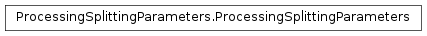

ProcessingSplittingParameters¶
About the ProcessingSplittingParameters class¶
The WaveBlocks Project
@author: R. Bourquin @copyright: Copyright (C) 2010, 2011, 2012, 2013, 2014, 2015 R. Bourquin @license: Modified BSD License
Inheritance diagram¶

Class documentation¶
- class WaveBlocksND.ProcessingSplittingParameters¶
- build(method)¶
Parameters: method – A string specifying the method for time integration. Returns: Four arrays  ,
,  and
and  ,
,  .
.Method Order Authors Reference BCR764 (7,6,4) Blanes/Casas/Ros [1] table (iv) [1] S. Blanes, F. Casas, and J. Ros, “Symplectic Integration with Processing: A General Study”, SIAM Journal on Scientific Computing, Volume 21, Issue 2, (1999) 711-727.
- intprepsplit(psi1, psi2, a, b, y, z, tspan, N, args1=[], args2=[])¶
Compute a single, full propagation step by processing operator splitting.
Parameters: - psi1 – First evolution operator

- psi2 – Second evolution operator

- a – Parameters for evolution with operator
- b – Parameters for evolution with operator
- y – Parameters for evolution with processor

- z – Parameters for evolution with processor
- tspan – Timespan
 of a single, full splitting step
of a single, full splitting step - N – Number of substeps to perform
- args1 – Additional optional arguments of
- args2 – Additional optional arguments of
Note
The values for args1 and args2 have to be ``list``s even in case of single items.
- psi1 – First evolution operator